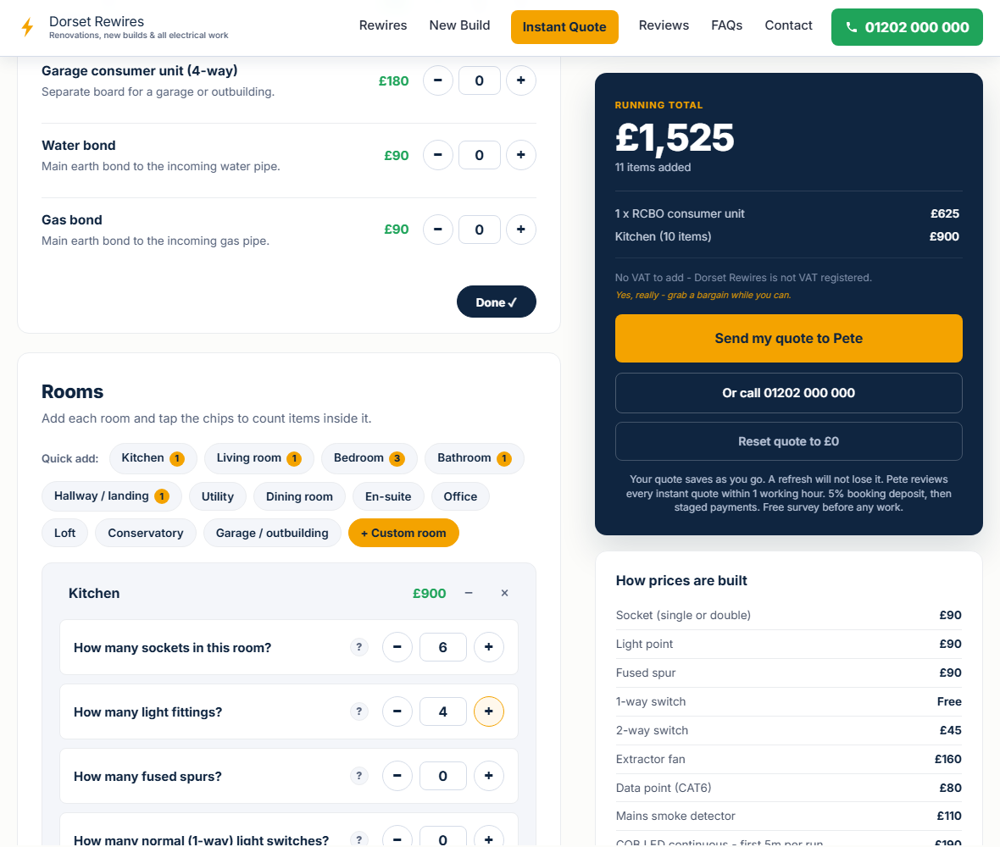

House Rewires & Rewiring in Poole
Professional electrical rewiring across Poole - a full house rewire (or a partial rewire where that is all you need) with a fixed price you can build yourself. No VAT to add. A 10-year guarantee. We rewire empty properties, so the job is faster, cleaner and cheaper for you.
Price your Poole rewire yourself
Most electricians make you wait for a quote. We let you build your own price in about 60 seconds, with no email. It is the same maths Pete uses on the doorstep, and your final price is fixed in writing after a free survey.

And there is no VAT to add (not yet - we are a growing firm). The price you see is the price. Many firms add 20% on top.
Areas we cover in Poole
We rewire homes right across Poole and the BH postcodes. That includes:
- Central: Poole town, Old Town, Baiter, Sterte, Oakdale
- Parkstone and around: Parkstone, Lower Parkstone, Penn Hill, Whitecliff, Branksome, Branksome Park, Alder Hills, Alderney, Newtown, Rossmore, Bourne Valley
- The peninsula: Lilliput, Canford Cliffs, Sandbanks
- West, over the bridge: Hamworthy, Lower Hamworthy, Turlin Moor, Upton, Creekmoor
- North: Canford Heath, Fleetsbridge, Broadstone, Canford Magna
Not sure if we reach you? Give us a call and ask.
Why Poole homes need rewiring
Poole's housing is a real mix, and the age is what catches people out. Parkstone and Penn Hill are full of Edwardian terraces. Branksome Park is mostly 1920s and 1930s detached houses. Plenty are still on wiring that was only ever meant to last a few decades. By now the insulation has gone brittle, the old fusebox has no shock protection, and there are nowhere near enough sockets. A full rewire brings the whole house up to today's standards in one go. If yours has not been done in 25 to 30 years, it is worth a look.
Pete knows Poole's period homes first hand. His own house is an 1880s cottage-style semi in Parkstone. When he moved in, it still had a rewireable fusebox. So when we say we have rewired old Poole homes, we mean it, including our own.
Poole has a problem most towns do not: the sea. Salt air off the harbour and around Sandbanks eats into outdoor wiring and fittings far faster than it does inland. On coastal jobs we fit marine-grade outdoor parts that are built to stand up to it. That way an outside light or an EV charger is not quietly corroding away within a couple of years.
The hidden fault almost nobody knows about: a broken ring
Most homes are wired as a "ring". The cable leaves the fusebox, runs round all the sockets, and loops back, so two paths share the load. If one leg of that ring gets broken, often by a nail, a screw, or a bodged repair buried in a wall years ago, every socket still works and still has power. You would never know anything was wrong.
But now all that current is forced down a single cable that was never meant to carry it alone. That cable slowly overheats inside the wall, out of sight. This is one of the ways electrical fires start. We test for ring continuity on every survey, find these hidden breaks, and a rewire puts it right for good.
Signs your home needs a rewire
- An old fuseboard with rewireable fuse wire or a wooden back
- No test buttons on the board (no RCD, so no modern shock protection)
- Black rubber or fabric cable instead of modern grey or white
- Not enough sockets, so extension leads everywhere
- Lights dim when the shower or the kettle comes on
- Fuses blow or the power trips for no clear reason
- Scorch marks, buzzing or a burning smell at a socket or the board
Want the full picture? See our rewire cost guide for what is included and what changes the price.
Do you have to move out?
For a full house rewire we work on empty properties only. It is faster, cleaner and cheaper for you, and we can film the progress for you to see. The best time is before you move in, between tenants, or as part of a renovation. For smaller jobs, like a consumer unit upgrade, an EICR or an EV charger, you can stay in the home.
What a full rewire costs in Poole - electrical rewiring prices
Real-world ranges for Poole homes in 2026. Your price is fixed in writing after a free survey. No VAT to add.
| Property | Typical range |
|---|---|
| 1 bed | £2,800 - £4,000 |
| 2 bed | £3,800 - £5,500 |
| 3 bed | £4,500 - £7,000 |
| 4 bed | £6,500 - £11,000 |
| 5 bed+ | £10,000 - £16,000 |
Big period homes, a high-spec install, or a job that includes a heat pump can run £12,000 to £16,000 or more. See the full cost guide for what is included, what pushes the price up, and how to spot a dodgy quote.
Want a real price, not a guess?Build your exact Poole rewire price now, room by room. It takes a few minutes. Price my rewire →Partial rewires in Poole
Not every home needs the full job. If part of the wiring is sound, a partial rewire - one floor, an extension, or just the failed circuits - can be the honest answer. Pete surveys for free and tells you straight which one you need, priced per room and per point on the instant quote tool.
Why choose Dorset Rewires
- A price you can build yourself on our instant quote tool, then fixed in writing after a free survey
- No VAT to add (we are not VAT registered, not yet)
- No markup on materials - we charge them at cost, our margin is in the labour
- Part P registered
- A 10-year workmanship guarantee in writing
- Local to Poole's period homes, including marine-grade fittings near the harbour and Sandbanks
- Interlinked mains smoke and heat alarms fitted as part of every rewire
- Pete surveys every job himself and gives your quote on the spot, the same day
- A 5% booking deposit, then staged payments as the work progresses
Not sure you even need a rewire? We will do a free survey and a quick on-the-spot check. Want it in writing? We also do a full EICR safety report. If the cables are sound, you may only need a new consumer unit.
A recent Poole rewire
Quick answers
How much does a rewire cost in Poole?
Most Poole rewires run from about £2,800 for a 1-bed flat to between £6,500 and £11,000 for a 4-bed house. There is no VAT to add. Your price is fixed in writing after a free survey. See the cost guide for the full breakdown.
Do you cover my area?
We cover Poole right across the BH postcodes, from Parkstone and Penn Hill to Sandbanks, Hamworthy, Canford Heath and Broadstone. If you are not sure, give us a call and ask.
Do I have to move out during the rewire?
For a full rewire we work on empty properties only. It is faster, cleaner and cheaper. Smaller jobs, like a consumer unit upgrade or an EICR, can be done while you live in the home.
Do you charge VAT?
No. Dorset Rewires is not VAT registered, so the price you are quoted is the price you pay. Many firms add 20% on top.
Are you qualified, and is there a guarantee?
Yes. We are Part P registered, and every rewire comes with a 10-year workmanship guarantee in writing.
Related pages
- Electrician in Poole - our full local service hub
- House rewires in Bournemouth
- Rewire cost guide 2026 - what changes the price
- EICR safety reports - not sure you need a rewire? An EICR tells you
- Consumer unit upgrades - sometimes the board is all you need
Quotes, not estimates - want one for your Poole home?
Free survey, same-day quote on site, no VAT to add, 5% booking deposit then staged payments, 10-year guarantee.